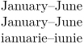

Syntax (autogenerated)
| \month{...} | |
| {...} | number |
Syntax
| \month{...} | |
| {...} | number |
Description
Produces the lowercase language label text for the month given by number, which should be between 1 and 12.
Example
-
% In English, months have initial capitals even in lowercase text. \month{1}--\month{6} \language[ro] % merely changes the hyphenation language \month{1}--\month{6} \mainlanguage[ro] % changes the language the document is in \month{1}--\month{6}
- 
See also
- \MONTH for the month in all caps
- \weekday and \WEEKDAY to print days of the week
- \mainlanguage to choose the language the month appears in
- This command uses the labels mechanism. See \setuplabeltext and \labeltext to set up and use your own labeled concepts.
Help from ConTeXt-Mailinglist/Forum
All issues with: